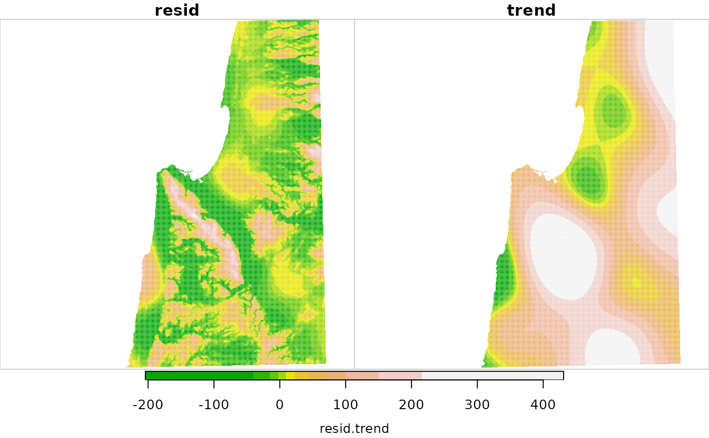
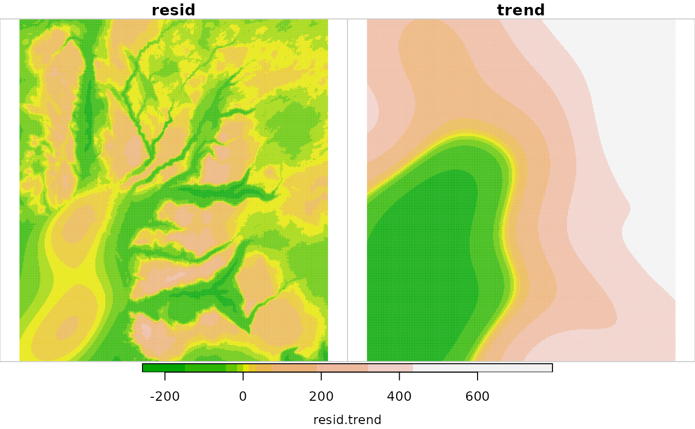

Detrends a Digital Elevation Model (DEM) raster, by subtracting a trend surface. The trend is computed using mgcv::gam or mgcv::bam (when parallel>1) with formula z ~ s(x, y).
detrend(x, parallel = 1)A two-dimensional stars object representing the DEM
Number of parallel processes. With parallel=1 uses ordinary, non-parallel processing.
A two-dimensional stars object, with two attributes:
resid - the detrended result, i.e., "residual"
trend - the estimated "trend" which was subtracted from the actual elevation to obtain resid
# Small example
data(dem)
dem1 = detrend(dem)
dem1 = st_redimension(dem1)
dem1 = st_set_dimensions(dem1, 3, values = c("resid", "trend"))
plot(round(dem1), text_values = TRUE, col = terrain.colors(11))
# \donttest{
# Larger example 1
data(carmel)
carmel1 = detrend(carmel, parallel = 2)
carmel1 = st_redimension(carmel1)
carmel1 = st_set_dimensions(carmel1, 3, values = c("resid", "trend"))
plot(carmel1, col = terrain.colors(11))

# Larger example 2
data(golan)
golan1 = detrend(golan, parallel = 2)
golan1 = st_redimension(golan1)
golan1 = st_set_dimensions(golan1, 3, values = c("resid", "trend"))
plot(golan1, col = terrain.colors(11))
#> downsample set to 1

# }